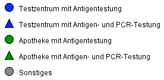

<!DOCTYPE html>
<html>
<head>
    <title>Karte | Corona-Testzentren Hamburg</title>
    <meta charset="utf-8" />
    <meta name="viewport" content="width=device-width, initial-scale=1.0, maximum-scale=1.0, user-scalable=no" />
    <link rel="icon" type="image/png" href="img/icons/sonne_blatt_icon.svg">
    
    <!-- Stylesheets -->
    <link rel="stylesheet" href="css/fullmap.css" />

    <!-- Leaflet -->
    <link rel="stylesheet" href="lib/leaflet/leaflet.css" />
    <script src="lib/leaflet/leaflet.js"></script>
    <link rel="stylesheet" href="lib/leaflet/MarkerCluster.css" />
    <link rel="stylesheet" href="lib/leaflet/MarkerCluster.Default.css" />
    <script src="lib/leaflet/leaflet.markercluster.js"></script>
    <link rel="stylesheet" href="lib/leaflet-search-master/dist/leaflet-search.src.css">
    <script src="lib/leaflet-search-master/dist/leaflet-search.src.js"></script>

    <!-- Data -->
    <script src="data/klima.digital.js"></script>
    <script src="data/countries.1.geojson"></script>

    <!-- Sweet alert -->
    <script src="https://unpkg.com/sweetalert/dist/sweetalert.min.js"></script>    
    <link rel="stylesheet" type="text/css" media="screen" href="css/alert.css" />

    <!-- Additional style -->
    <style>
    
        /* class='my-layer-item' für items im Menü */
        .my-layer-item {
            height : 20px; 
            width : 20px;
            }
    
        .layer-item-text {
            /* text-shadow: 3px 2px red; */
            color: green;
        }

        /*Legend specific*/
        .legend {
          padding: 6px 8px;
          font: Arial, Helvetica, sans-serif;
          background: white;
          background: rgba(255, 255, 255, 0.8);
          /*box-shadow: 0 0 15px rgba(0, 0, 0, 0.2);*/
          /*border-radius: 5px;*/
          line-height: 24px;
          color: #555;
        }

        .legend h4 {
          text-align: left;
          font-size: 16px;
          margin: 2px 12px 8px;
          color: rgb(50, 50, 50);
        }

        .legend img {
          margin: 2px 12px 8px;
          width: 240px;
        }

        .legend p {
          text-align: left;
          font-size: 10px;
          line-height: 18px;
          margin: 2px 12px 8px;
          color: rgb(50, 50, 50);
        }

    </style>

</head>

<body>

    <div id="map"></div>

    <script>

        // BUTTONS & MENUES
        var refreshButton =  L.Control.extend({
            options: {
                position: 'topleft'
            },
            onAdd: function (map) {
                var container = L.DomUtil.create('div', 'leaflet-bar leaflet-control leaflet-control-custom');
                L.DomEvent.addListener(container, 'click', L.DomEvent.stopPropagation)
                
                container.style.backgroundImage = "url(img/icons/refresh_icon.png)";
                container.style.backgroundColor = 'white';
                container.style.backgroundSize = "30px 30px";
                container.style.width = '30px';
                container.style.height = '30px';

                container.onclick = function(e){
                    location.reload();
                    location.href='#';
                    console.log('buttonClicked');}
                return container;
            }
        });

        var backButton =  L.Control.extend({
            options: {
                position: 'topleft'
            },
            onAdd: function (map) {
                var container = L.DomUtil.create('div', 'leaflet-bar leaflet-control leaflet-control-custom');
  
                container.style.backgroundImage = "url(img/icons/back_icon.png)";
                container.style.backgroundColor = 'white'; 
                container.style.backgroundSize = "30px 30px";
                container.style.width = '30px';
                container.style.height = '30px';

                container.onclick = function(e){
                    location.reload();
                    location.href='index.html';
                    console.log('buttonClicked');}
                return container;
            }
        });

        var ulcorner = L.latLng(84.98, -195),       // upper left (ul): Lat: 84.98988242318453, Lon: -179.66489407820583
        lrcorner = L.latLng(-85.06, 200),           // lower right (lr): Lat: -85.0605077611077, Lon: 181.31172035309675
        bounds = L.latLngBounds(ulcorner, lrcorner);

        // LAYER & STYLE
        var countriesLayer;

        function highlightFeature(e){
            var layer = e.target;
            layer.setStyle({
                weight : 3,
                color : 'green',
                fillColor : 'white',
                fillOpacity : 0.2
            });
            this.openPopup();
        }
        if(L.Browser.ie && !L.Browser.opera){
            layer.bringToFront();
        }

        function resetHighlight(e){
            countriesLayer.resetStyle(e.target);
            this.closePopup();
        }

        function zoomToFeature(e){
            map.fitBounds(e.target.getBounds());
        }

        function countriesOnEachFeature(feature, layer){
            layer.on({
                mouseover: highlightFeature,
                mouseout: resetHighlight,
                click : zoomToFeature,
            });
            layer.bindPopup(feature.properties.name);
        }

        // MAP INITIALIZATION

        mapLink = '<a href="http://openstreetmap.org">OpenStreetMap</a>';

        var osm = L.tileLayer('http://{s}.tile.openstreetmap.org/{z}/{x}/{y}.png', {
            attribution: '&copy; ' + mapLink + ' Contributors',
            maxZoom: 19,
            minZoom: 2,
        });
            
        // var wiki = L.tileLayer('https://maps.wikimedia.org/osm-intl/{z/{x}/{y}{r}.png', {
        //     attribution: '&copy; <a href="https://wwwopenstreetmap.org/copyright">OpenStreetMap</a>contributors, <a href="https://wikimediafoundation.orgwiki/Maps_Terms_of_Use">Wikimedia</a>',
        //     maxZoom: 19,
        //     minZoom: 2,
        // });

        // COVID Testzentren HH
        var wmsLayer = L.tileLayer.wms('https://geodienste.hamburg.de/HH_WMS_Corona_Testzentren?', { 
            layers: 'thema_corona_testzentren',
            format: 'image/png',
            transparent: true, 
        });

        var map = L.map('map', {
            center : bounds.getCenter(),
            maxBounds: bounds,
            maxBoundsViscosity: 0.6,
            layers: [osm, wmsLayer],
        }).setView([53.54, 10.01], 10);

        L.control.scale({'imperial': false}).addTo(map);

        map.addControl(new backButton());
        map.addControl(new refreshButton());

        var baseMaps = {
            'OpenStreetMap (OSM)' : osm,
        }

        var overlayMaps = {
            'COVID Testzentren in Hamburg (LGV)' : wmsLayer,
        }

        L.control.layers(baseMaps, overlayMaps, {position: 'topright'}).addTo(map);   // autoZIndex: false


        /*Legend specific*/
        var legend = L.control({ position: "bottomleft" });

        legend.onAdd = function(map) {
          var div = L.DomUtil.create("div", "legend");
          div.innerHTML += "<h4>Corona-Testzentren Hamburg</h4>";
          div.innerHTML += '';
          div.innerHTML += '<p>Datenquelle und weitere Informationen:<br> <a href="https://www.hamburg.de/corona-schnelltest" target="_blank">hamburg.de/corona-schnelltest</a><br><a href="https://metaver.de/trefferanzeige?cmd=doShowDocument&docuuid=EF70CF7B-06C4-41EC-80DF-8C40D775E90C" target="_blank">Geodatensatz des LGV</a></p>';

          return div;
        };

        legend.addTo(map);


        // SEARCH BAR
        map.addControl( new L.Control.Search({
		    url: 'https://nominatim.openstreetmap.org/search?format=json&q={s}',
		    jsonpParam: 'json_callback',
		    propertyName: 'display_name',
		    propertyLoc: ['lat','lon'],
		    marker: L.circleMarker([0,0],{radius:10}),
		    autoCollapse: true,
		    autoType: false,
            minLength: 2,
            zoom: 15,
        }) );

        // fire a popup of the current lat/long
        // map.on('click', function(e) {      
        //     var coord_lat = e.latlng.lat;
        //     var coord_lon = e.latlng.lng;

        //     var coord_lat_prec = coord_lat.toPrecision(10)
        //     var coord_lon_prec = coord_lon.toPrecision(10)

        //     var popLocation= e.latlng;
        //     var popup = L.popup()
        //     .setLatLng(popLocation)
        //     .setContent('Lat: ' + coord_lat_prec + '<br> Lon: ' + coord_lon_prec + '<br>' + coord_lat_prec + ', ' + coord_lon_prec)
        //     .openOn(map);        
        // });

        // LOKALISIERUNG DES USERS
        map.locate({setView: true, maxZoom: 15});
            function onLocationFound(e) {
                var radius = e.accuracy / 2;
            L.marker(e.latlng).addTo(map)
                .bindPopup("Sie befinden sich hier (&pm; " + radius + " m).").openPopup();
            L.circle(e.latlng, radius).addTo(map);
        }
    
        map.on('locationfound', onLocationFound);
        function onLocationError(e) {
            swal('Keine Geolokalisierung gewünscht.');
        }
        map.on('locationerror', onLocationError);

    </script>
</body>
</html>
